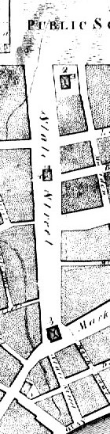
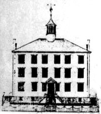

|
This detail from a development map of Albany made by New York State Surveyor General Simeon De Witt in 1794 helps us plot out residences and businesses on early Albany's main street at the beginning of the city's first great period of growth! This map was the first to list all Albany streets by name. With the First Federal Census of 1790, we can focus on the lives of these "State Street People!" At the same time, a contemporary view from the steps of St. Peter's church permits access into the heart of the Albany community. By that time, the fort which stood in the middle of the street had been dismantled permitting State Street to run from the river, up the hill, to Eagle street and then branch into Lion (Washington Avenue) and Deer (upper State) Streets. Two important community landmarks sat in the middle of the street. The large and assertive Dutch Reformed Church at the intersection with Market Street had been at that location for 140 years and still was Albany's premier social institution. Heading up the hill, St. Peter's Episcopal (formerly Anglican) church had served Albany's English speaking congregation since 1714. Within a decade, both edifaces would be removed and relocated to other parts of the city. However, it would be many decades before the median of this wide boulevard was cleared enough to permit easy travel up the hill. Chief among the remaining landmarks was the Elm Tree Corner (northwest corner of State and Pearl) where a young Philip Livingston was said to have planted a tree that lived for more than 150 years. State Street was the home of many of the community's most august personages. Reclusive Baltus Lydius sitting in the window of the old family home; the old Schuyler House that became a landmark tavern; John Stevenson's modern mansion where Governor Van Buren later lived. The home of chief justice Robert Yates; the old Wendell house; Philip S. Van Rensselaer's mansion; and many others The two blocks between Pearl and Market were lined with the homes of Albany's business elite. On the north side, the first bank was opened at State Street in 1803. Its facade is still visible today. Several homes including that of State legislator Leonard Gansevoort were destroyed in the great fire of 1793! On the south side, the block was divided by Green Street - a long narrow path past the stage office to "Cheapside" and the pastures beyond. By 1790, future Lieutenant Governor John Tayler had taken up residence at 50 State Street. Between Market Street and the river, the lower two blocks of State Street were lined with small shops and storehouses. Basic layout and lot sizes are discernible on an engraving of a map originally made by the city surveyor in 1792. Subsequent city cartography as well as recent urban archeology helps us reconstruct living patterns at the beginning of Albany's first great period of growth. State Street was the subject of an exhibition opened in September 2002 at the University at Albany Art Gallery!
Sources: A description of the layout of Albany streets entitled "Some Views of Albany About 1800" (but actually focusing a couple of decades later) appears in The Bicentennial History of Albany, pp. 666-78. See also, Albany's Historic Street: A Collection of some of the Historic Facts and Interesting Traditions relating to State Street & Its Neighborhood (reprinted from an anniversary publication of the National Savings Bank published in 1918 by Papp Historical Publications in 1971). This source is valuable for its substantial compilation of descriptive information and local lore!  New Prison shown on the map and in an inset on the full engraving of the map of Albany made by Simeon De Witt. The building was authorized by a New York State legislative enactment in 1791. However, it was not completed until 1804 or 1809 and replaced the jail in the old city hall. The building (roughly 84'x 116') was bounded by State and Eagle Streets and Maiden Lane. In 1831, 56 inmates were confined there. It was sold at auction in 1832. The second "new jail," located on Eagle and Howard Streets, was opened in 1834. See Bicentennial History, 348-49. Home | Site Index | Navigation | Email | New York State Museum first posted 8/00; last revised 4/12/08 |
{kind=link}